як примінити куплений пак
1. Відкрийте програму Команди
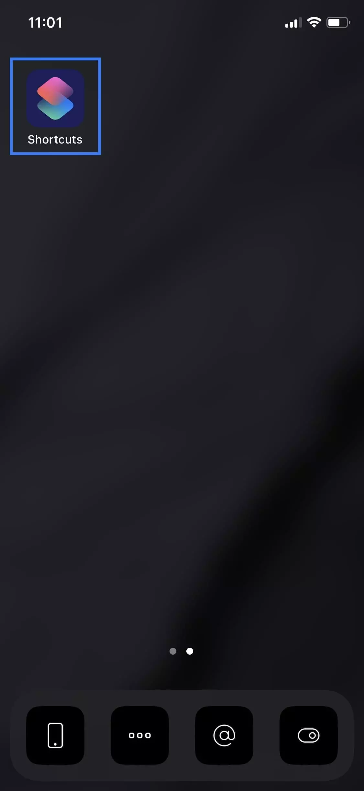2. Додайте новий ярлик
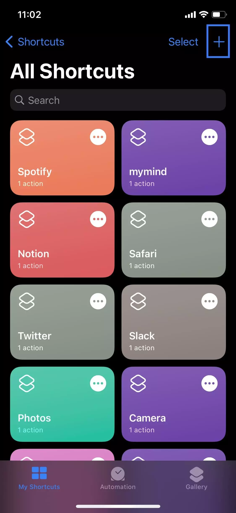3. Натисніть кнопку Додати дію
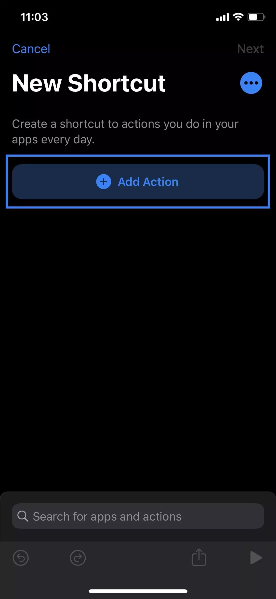4. Клацніть на опцію Сценарії
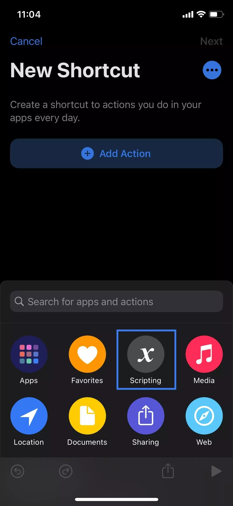5. Натисніть кнопку Відкрити програму
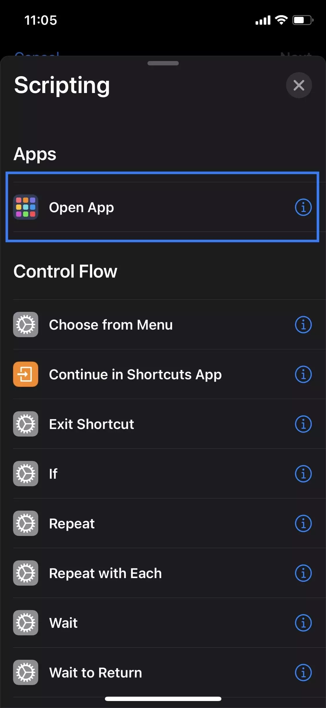6. Виберіть програму, яку ви хочете налаштувати
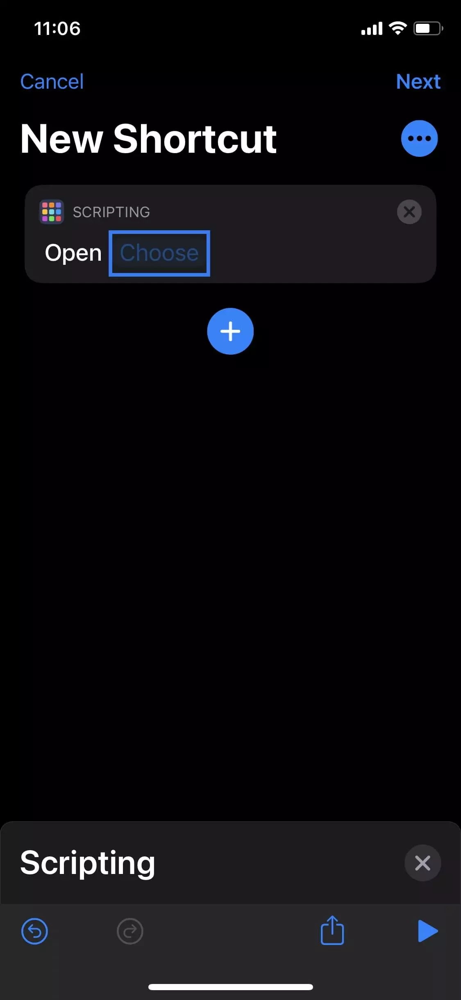7. Клацніть піктограму три крапки
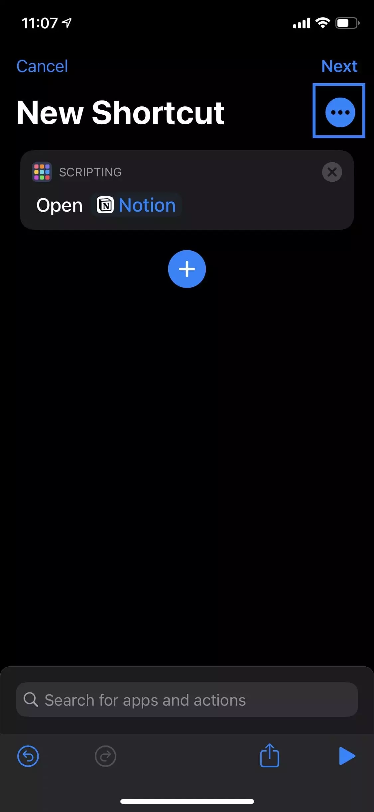8. Натисніть кнопку Додати на головний екран
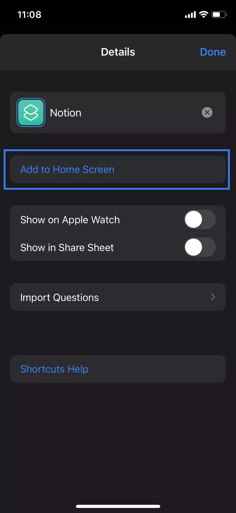9. Виберіть ім’я, а потім торкніться піктограми
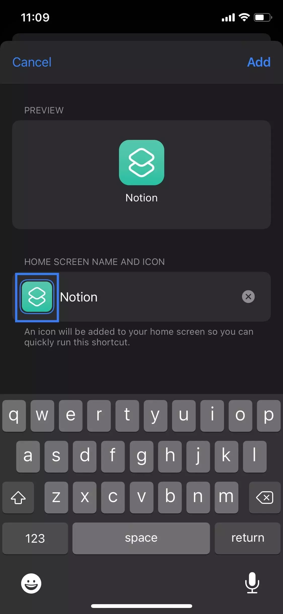10. Натисніть кнопку Вибрати фото
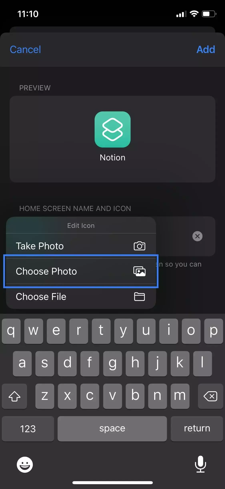11. Виберіть свою піктограму, а потім натисніть Додати
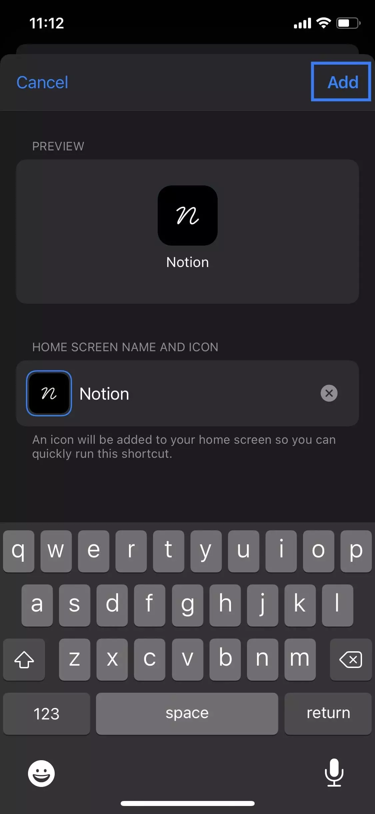12. Іконка повинна бути на вашому домашньому екрані!
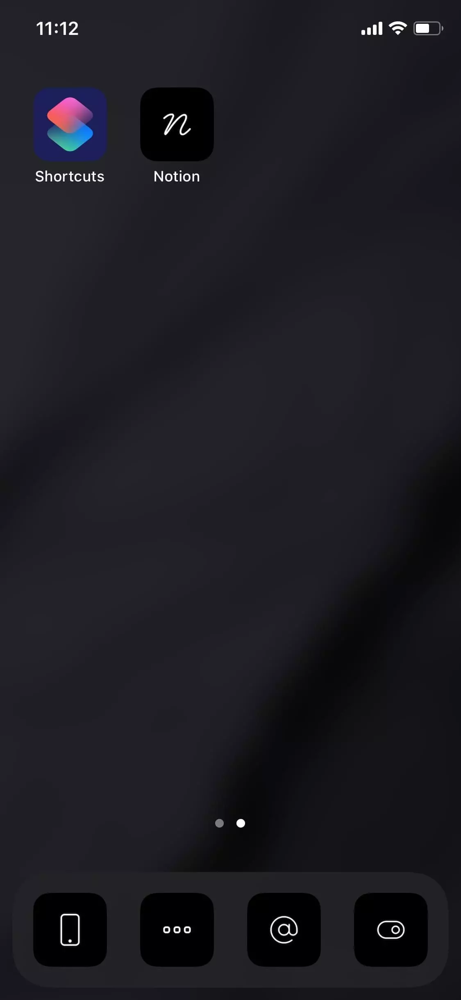